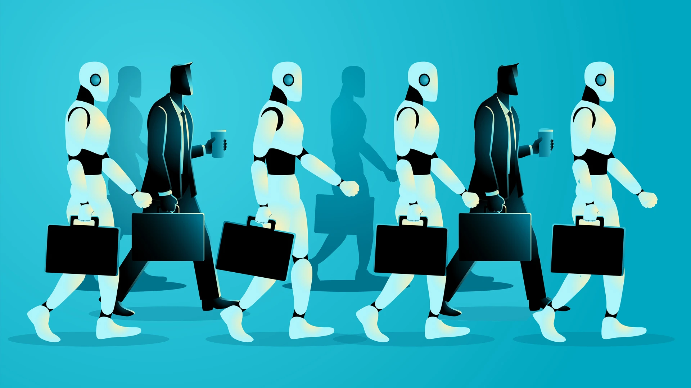
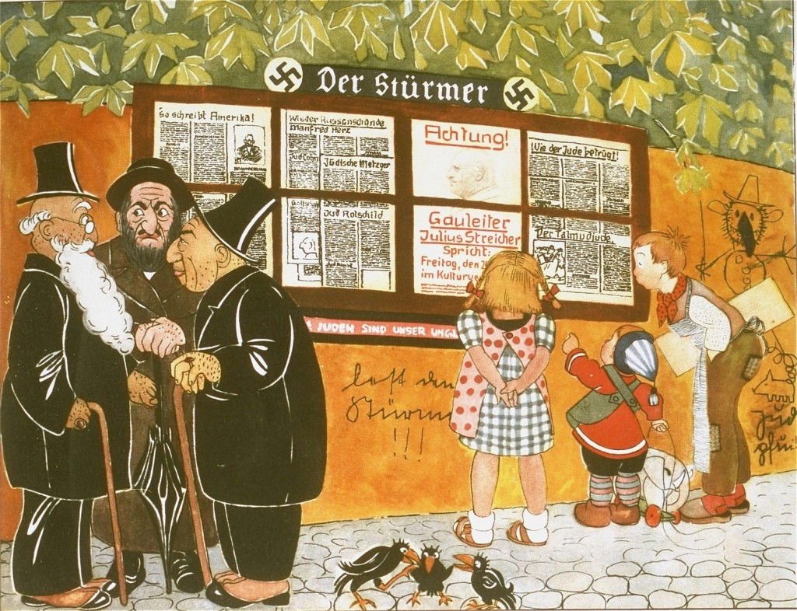
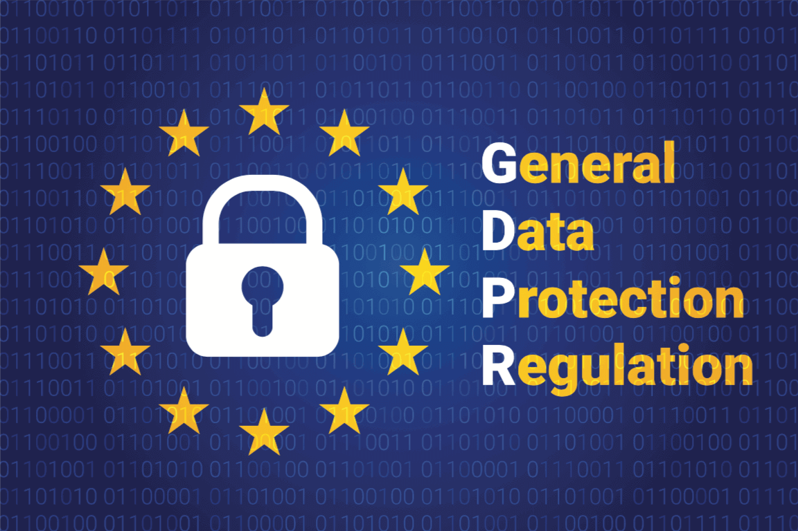
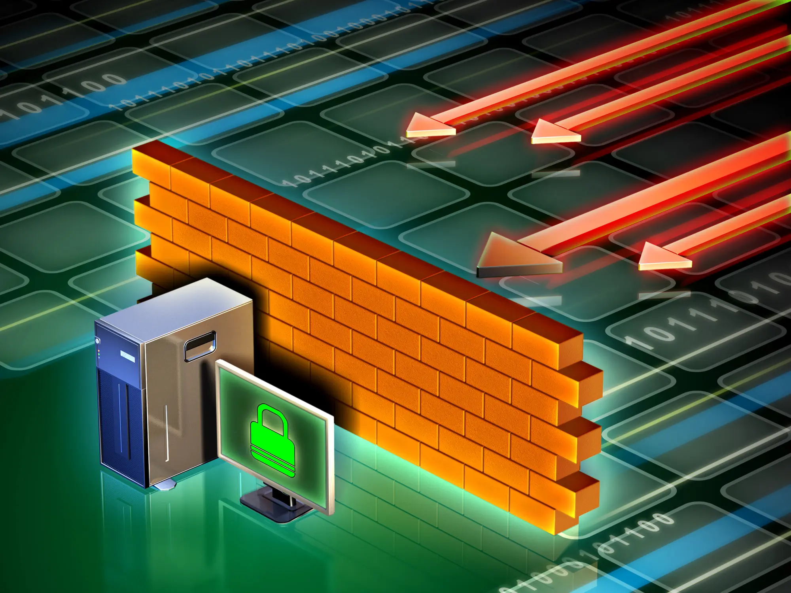

Nel pensiero cristiano e cattolico, il concetto di pace non rappresenta solo
l’assenza di guerra. La tradizione teologica e il Magistero della Chiesa hanno creato una visione
riassunta nell'espressione latina "Opus iustitiae pax", che significa che la pace è il risultato
della giustizia.
Questa visione si basa sul concetto di dignità intrinseca della persona umana:
ogni essere umano, essendo creato a immagine di Dio, ha diritti che non possono essere cancellati da
nessuna legge.
I conflitti di oggi in Ucraina, in Palestina, nell'area intorno all'Iran e in molte altre aree del
mondo non si possono capire fino in fondo se non si tengono in conto le disuguaglianze economiche
globali che li influenzano. Spesso, la competizione per risorse fondamentali come acqua, terre
coltivabili, petrolio o minerali rari viene raccontata soprattutto come scontri etnici o religiosi,
mentre l'aspetto economico resta meno visibile o addirittura nascosto. Per questo la pace non può
essere raggiunta solo attraverso la diplomazia o la firma di accordi internazionali. È necessario
anche un cambiamento che riguardi il funzionamento dell'economia globale, così da garantire un
accesso più giusto ed equilibrato alle risorse essenziali per tutti i popoli e tutti gli stati.
The world of work is changing on a scale we have rarely seen before. At the centre of this shift is
a clear paradox. On one hand, technology could free people from dangerous, repetitive, or physically
demanding jobs, opening the door to more creative and meaningful forms of work. On the other hand,
it is also creating new and significant inequalities, both within individual countries and across
the world.
The idea of technological unemployment is not new. During the Industrial Revolution in
eighteenth-century England, groups like the Luddites destroyed weaving machines because they feared
that automation would take away their jobs. In the long run, history showed that industrialisation
actually created more jobs than it eliminated. However, this transition was far from smooth. It
brought decades of social disruption, including child labour, unsafe working conditions, and
widespread urban poverty, before laws and institutions eventually adapted to the new economic
reality. Unlike earlier technological shifts, AI does not only affect manual labour but it will also
be capable of replacing or transforming tasks that are currently performed by highly skilled
professionals.
According to a 2023 study by Goldman Sachs, generative AI could eventually automate tasks currently
carried out by around 300 million full time workers worldwide. The potential impact spans a wide
range of fields, including law, finance, healthcare, education, and creative industries.

tra Innovazione e Analisi del Movimento Il tiro con l'arco rappresenta un esempio particolarmente chiaro dell'impatto della tecnologia nello sport. In questa disciplina, il margine tra vittoria e sconfitta a livello olimpico si misura spesso in millimetri o millesimi di secondo. Un arciere non si limita a esercitarsi nel tiro, si allena a ripetere lo stesso gesto con la minima variabilità possibile decine di migliaia di volte. In questo contesto, la tecnologia permette di monitorare, correggere e perfezionare ogni dettaglio del movimento.
Il Novecento è stato il secolo della propaganda di massa. I regimi totalitari
del XX secolo, come il fascismo e il nazismo, compresero prima di qualunque altra istituzione che il
controllo dell'informazione era una condizione fondamentale per il controllo politico.
Non bastava eliminare fisicamente gli oppositori: era necessario influenzare l'opinione pubblica,
creare consenso e costruire una realtà in cui il regime non apparisse come una violazione della
libertà, ma come un ente liberatore.
In Italia, il fascismo mise in piedi un complesso sistema di controllo dell'informazione. Il
Minculpop (Ministero della Cultura Popolare), istituito nel 1937, inviava quotidianamente le
cosiddette "veline" alle redazioni giornalistiche con istruzioni precise su cosa scrivere, come
titolare, quali argomenti evitare e quali enfatizzare. La censura non era solo reattiva, cioè volta
a punire chi trasgrediva le regole, ma anche preventiva e pervasiva: i giornalisti imparavano ad
autocensurarsi, conoscendo i limiti di cosa era concesso dire. Cinema, radio e pubblicità furono
anch’essi utilizzati all'interno di una strategia comunicativa progettata per suscitare sentimenti
di appartenenza, paura e slancio bellico.
1933
Ministero della Propaganda del Reich
In Germania, Goebbels assunse il controllo totale di stampa, radio, cinema e arti. La radio divenne
il principale strumento di propaganda di massa (nel 1939 16 milioni di famiglie tedesche ne avevano
almeno una).
1937
Minculpop, Italia fascista
Il Ministero della Cultura Popolare italiano coordinava la censura preventiva di tutta la stampa
nazionale attraverso il sistema delle veline, circolari giornaliere che contenevano istruzioni per i
giornalisti sui temi da trattare o evitare.

La diffusione su larga scala di internet e dei social media ha prodotto, in
pochi decenni, una trasformazione linguistica di portata simile a quella dell'invenzione della
stampa. La lingua italiana si è adattata e si è mischiata con l'inglese.
La categoria principale da analizzare è il registro linguistico, cioè l'insieme delle scelte
lessicali, sintattiche e pragmatiche che un parlante compie in base al contesto, al destinatario e
allo scopo del messaggio.
La scelta del registro di cui servirsi in rete è molto più complessa rispetto alla comunicazione cartacea o parlata.
Questo perché i diversi canali digitali richiedono modalità d'uso molto differenti: una mail
aziendale, un messaggio WhatsApp o un commento su TikTok richiedono scelte linguistiche
completamente diverse.
Il registro formale nella comunicazione digitale professionale e istituzionale conserva molte
caratteristiche della scrittura tradizionale: si usano frasi complete, punteggiatura corretta,
lessico preciso e privo di ambiguità, evitando abbreviazioni e emoji/emoticon.
Le abbreviazioni, le troncature e le semplificazioni tipiche della messaggistica online (alcuni
esempi in italiano sono: “grz”, “pk”, “nn”) seguono una logica precisa: hanno lo scopo di ridurre il
tempo di digitazione in un contesto in cui la rapidità di risposta è parte della competenza
comunicativa. In sostanza, risparmiare tempo nella scrittura di un messaggio non mostra pigrizia,
spesso, online, rispondere prima mostra, al ricevente del messaggio, interesse nel continuare la
conversazione.
La netiquette, unione di “network” ed “etiquette”, indica l'insieme delle norme comportamentali non
scritte che regolano la comunicazione online. I suoi principi fondamentali sono: rispettare
l'interlocutore, evitare l'uso di “CAPS”, ovvero evitare l'uso delle sole lettere maiuscole (che equivalgono ad urlare), non diffondere informazioni riservate, verificare i dati prima di
condividerli, non “spammare”, cioè inviare una grande quantità di messaggi a chi non li ha richiesti
ed evitare la diffusione di contenuti falsi.
Un fenomeno particolarmente significativo nella comunicazione online è il flaming, cioè la tendenza
a reagire in modo emotivo, eccessivo e aggressivo durante le discussioni online. Questo
comportamento è amplificato dall'effetto disinibizione legato all'anonimato, che riduce il senso di
responsabilità
.
In sostanza, comunicare online richiede essere capaci di contenere le proprie emozioni.
La sicurezza informatica e la protezione dei dati personali non sono più
questioni esclusivamente tecniche da affidare al reparto IT di un’azienda. Nell'economia digitale i
dati sono diventati una risorsa strategica delle aziende, e la loro tutela è oggi un requisito che
coinvolge la governance aziendale, il management, i processi operativi e la cultura
aziendale.
Il Regolamento Generale sulla Protezione dei Dati (GDPR, Regulation EU 2016/679) è entrato in vigore
in tutta l'Unione Europea il 25 maggio 2018, sostituendo la precedente Direttiva 95/46/CE e
aggiornando la normativa sulla privacy. Il GDPR si applica a qualsiasi organizzazione, pubblica o
privata, europea o extraeuropea, che tratti dati personali di individui residenti nell'UE. La sua
portata extraterritoriale è una delle caratteristiche più innovative perché una società americana
che offre servizi a utenti europei deve rispettare il GDPR indipendentemente dalla posizione dei
suoi server.
Il GDPR garantisce all'individuo il controllo sui propri dati personali, riconoscendo diritti quali
accesso, rettifica, cancellazione, portabilità, opposizione e limitazione del trattamento.
Privacy by Design
La protezione dei dati deve essere incorporata fin dall'inizio nella progettazione di sistemi e
processi, non aggiunta come strato successivo.
Accountability
Le organizzazioni devono poter dimostrare concretamente la propria conformità al regolamento, non
limitarvisi a dichiararla. Ciò implica mantenere documentazione, registri del trattamento e
procedure verificabili.
La gestione del rischio è diventata il quadro concettuale centrale per affrontare la sicurezza
informatica nelle organizzazioni moderne. Un'analisi del rischio accurata identifica gli asset
critici da proteggere, come dati dei clienti, proprietà intellettuale e sistemi operativi.
Il data breach, cioè l’esposizione al pubblico di dati personali, rappresenta uno dei rischi più
significativi per le organizzazioni moderne. Il GDPR impone alle organizzazioni di notificare le
violazioni all'Autorità Garante entro 72 ore dalla scoperta e di informare gli interessati quando la
violazione comporta rischi per i loro diritti e libertà. Le sanzioni previste dal regolamento
arrivano a 20 milioni di euro o al 4% del fatturato globale annuo. Grandi aziende come Meta, Google
e Amazon hanno già subito multe che hanno raggiunto centinaia di milioni di euro.
Dal punto di vista organizzativo, la conformità al GDPR richiede l'adozione di varie misure. La
nomina di un Data Protection Officer (DPO), obbligatoria per le organizzazioni che trattano dati
sensibili su larga scala o che effettuano attività di sorveglianza è uno di questi passaggi. Altre
misure fondamentali includono la redazione e l'aggiornamento del Registro dei Trattamenti, la
conduzione di Valutazioni d'Impatto sulla Protezione dei Dati (DPIA), la definizione di procedure
per gestire le richieste degli interessati e per notificare i data breach e la formazione continua
del personale.

Principi di Cybersicurezza:
CIA, Crittografia, Firewall e Minacce Informatiche
La cybersecurity, o sicurezza informatica, è la disciplina che si occupa di proteggere sistemi,
reti, programmi e dati da accessi non autorizzati, danni, furti e attacchi digitali.
Il concetto centrale della sicurezza informatica è la Triade CIA , acronimo di Confidentiality
(Riservatezza), Integrity (Integrità) e Availability (Disponibilità), principi che rappresentano le
caratteristiche fondamentali che ogni sistema sicuro deve garantire.
La riservatezza assicura che le informazioni siano accessibili solo a chi ha l'autorizzazione.
L' integrità garantisce che i dati non vengano modificati o alterati senza permesso.
La disponibilità fa sì che sistemi e informazioni siano accessibili agli utenti autorizzati quando
necessario.
La crittografia è uno dei pilastri della cybersecurity. Consiste nel trasformare dati leggibili
(plain text) in una forma illeggibile mediante algoritmi e chiavi crittografiche, in modo che solo
chi possiede la chiave corretta possa decifrarli.
La crittografia può essere simmetrica, quando la stessa chiave serve per cifrare e decifrare i dati,
come nell'algoritmo AES-256 oppure asimmetrica, quando si usano due chiavi correlate matematicamente
ma diverse, una pubblica e una privata, come nell’algoritmo RSA. Quest'ultima forma è alla base di
protocolli fondamentali come SSL/TLS.
I sistemi di autenticazione permettono a un sistema di verificare l'identità di chi tenta di
accedere. L'autenticazione tradizionale basata su username e password non è più sufficiente per
proteggere dati e sistemi sensibili, dato che le password possono essere rubate, indovinate o
intercettate.
Per aumentare la sicurezza, si usa l’autenticazione multifattore (MFA), che richiede almeno due dei
tre fattori fondamentali: qualcosa che si conosce, come password o PIN, qualcosa che si possiede,
come smartphone, token fisico o smart card e qualcosa che si è, come impronta digitale,
riconoscimento facciale o scansione dell'iride.
I firewall sono sistemi che filtrano il traffico di rete, controllando le comunicazioni tra reti
diverse, ad esempio tra una rete interna considerata sicura e internet seguendo regole definite
dall'amministratore di sistema. I firewall possono integrare ispezione dei pacchetti, rilevamento e
prevenzione delle intrusioni, filtraggio applicativo e analisi comportamentale basata su machine
learning, offrendo una protezione molto più sofisticata contro gli attacchi di oggi.
Principali Minacce Informatiche e Contromisure
Malware
Software malevoli (virus, worm, trojan, spyware) progettati per danneggiare sistemi o rubare
dati.
Ci si può proteggere tramite antivirus, EDR, sandboxing e aggiornamenti regolari.
Phishing
Email o messaggi fraudolenti che inducono l'utente a rivelare credenziali o dati sensibili.
L’unica vera protezione è la formazione utenti ma esistono altre misure di sicurezza tra cui: MFA,
filtri email, verifica dei mittenti.
Ransomware
Cifratura dei dati della vittima con richiesta di riscatto. Ha colpito ospedali, infrastrutture
critiche e aziende.
L’unica soluzione è avere backup offline.
